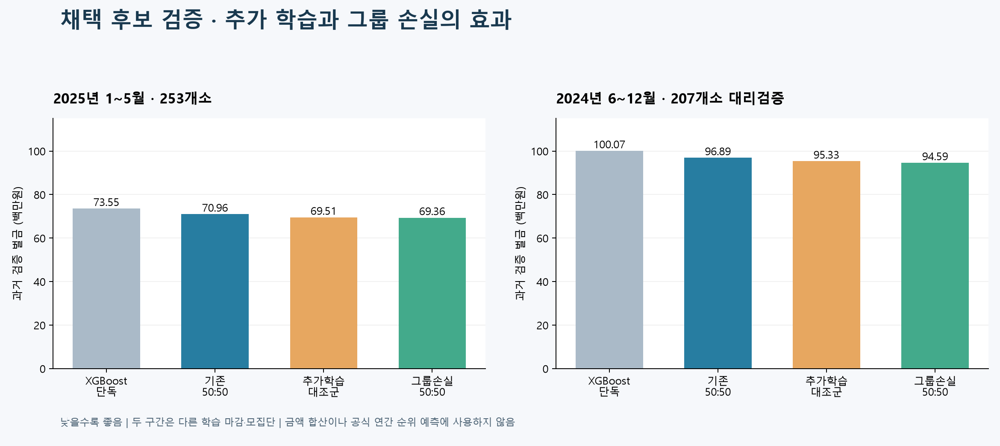

최종 개선 검증과 제출 후보
선택: XGBoost50% + 그룹 손실로 추가 학습한TCN50%
기존그룹·SMP 가중치·특징 구성 유지. 개별배율 보정은미채택.
| 과거 검증 | XGBoost | 기존50:50 | 추가학습 대조군 | 선택 후보 | 기존50:50 대비 개선 |
|---|
| 2025년 1~5월·253개소 | 73,554,800원 | 70,955,688원 | 69,506,626원 | 69,363,692원 | 2.24% |
| 2024년 6~12월·207개소 대리검증 | 100,068,170원 | 96,887,419원 | 95,328,811원 | 94,588,615원 | 2.37% |
개선에는추가 학습의 효과가 포함됨. 그룹 손실의추가 절감은대조군 대비2025년약14.3만원·2024년약74.0만원.

제출 파일
composition.csv253개소, forecast.csv17520행. 원래G1/G2·각20MW 이상. 상세 검증은제출 후보 폴더의검증결과.json 참조.
데이터 점검과 적용하지 않은 변경
R2에서예보 누락·단위·지점 키 오류가핵심 원인이라는증거는찾지 못함. 실측A 중복2개 키는진단에서만 제외.
발전소별 이득 공동학습과과거OOF 배율 보정은기준 미달로제외. 그룹 손실을적용한 짧은추가 학습만선택.
과거 검증기간은이전 실험에서검토한 이력이 있음.2024년은207개소 부분집합 대리검증. 두 구간 금액을더해공식 연간 점수로사용하지 않음. 최종모델은허용 학습기간으로재학습한 별도가중치. 실제 정산금과순위는미확정. 기존파일 보존. 온라인 제출은자동실행하지 않음.